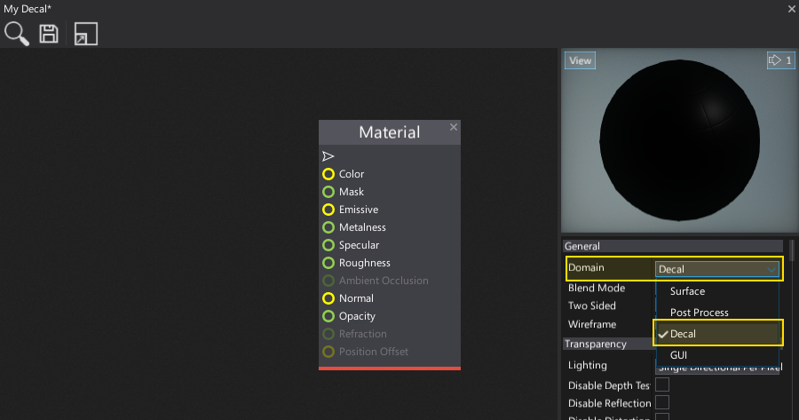
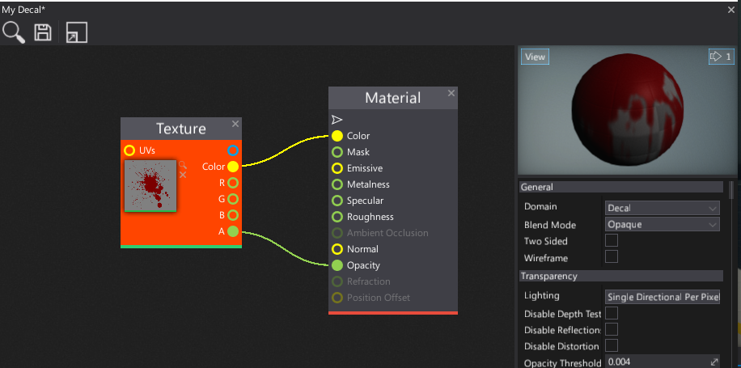
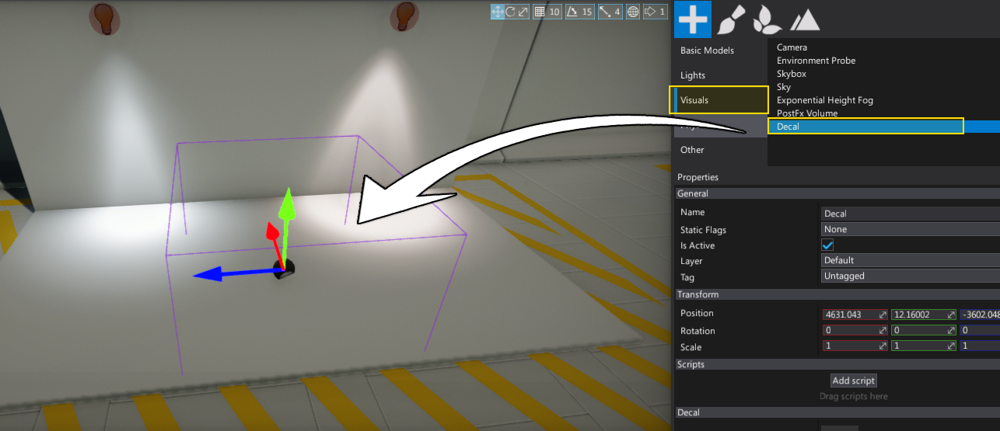
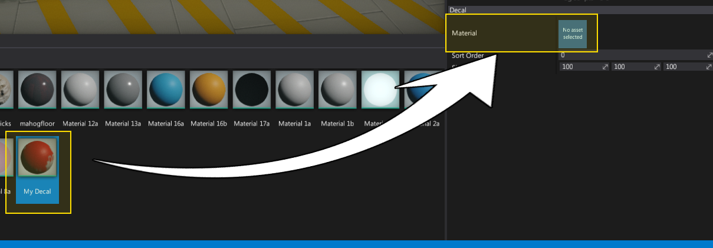
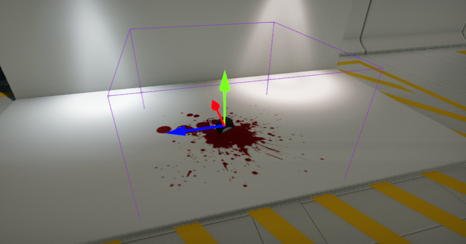

HOWTO: Create a decal
In this tutorial, you will learn how to create and use decal. Follow the instructions to create a simple blood stain. If you need the requried texture checkout the official Flax Samples to get one.
1. Create material
The first step is to create a new material asset (see Materials Basics page to learn how to do it).
2. Set Domain to Decal
Next step is to open the material editor and change the material Domain to Decal as shown in the picture below.

3. Add decal texture
Now drag and drop the texture you want to draw as a decal. Then connect it with material color and opacity properties as show in the picture below. Also you can see the preview of the decal in the Material Preview panel.

4. Save material
Press Ctrl+S or click the Save button to save the changes in the material asset.
5. Create Decal actor
Now add a new Decal actor to your scene. You can drag and drop it from the Toolbox Window (Visuals tab) or use a Scene Tree Window and the dedicated context menu.

6. Assign material
Select the created decal actor and assign the material to its property Material.

7. See the results

Your decal is ready. You can use it in your game. Also, decals can be spawned at runtime via C# script and you can create a virtual dynamic material instance to modify the decal parameters, for instance: fade off the decal after a timeout.